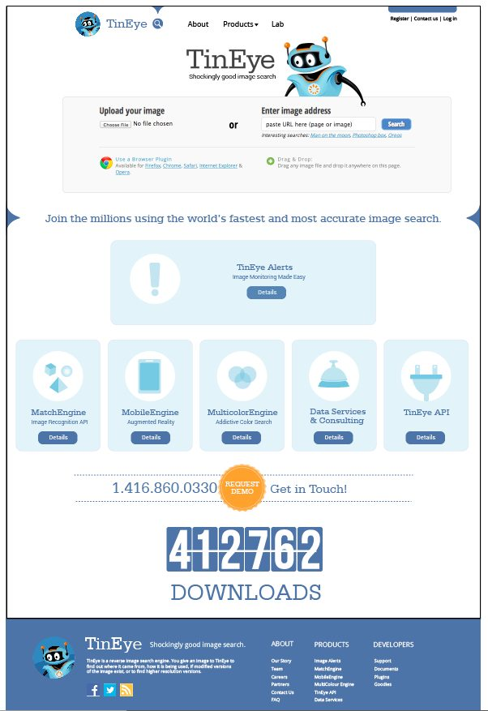
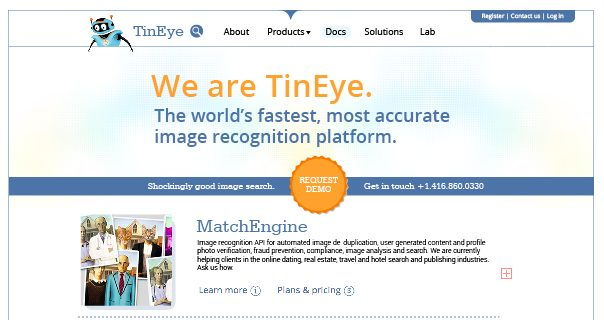
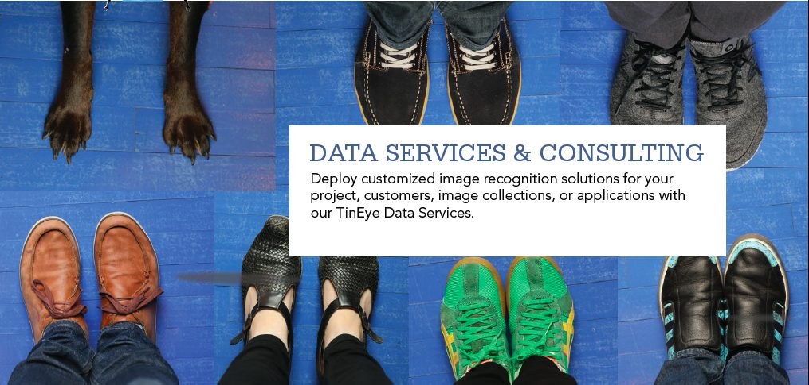
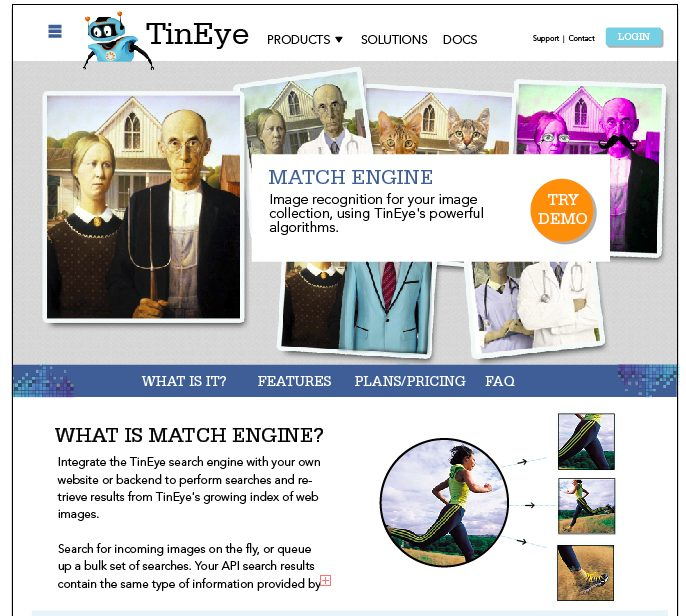
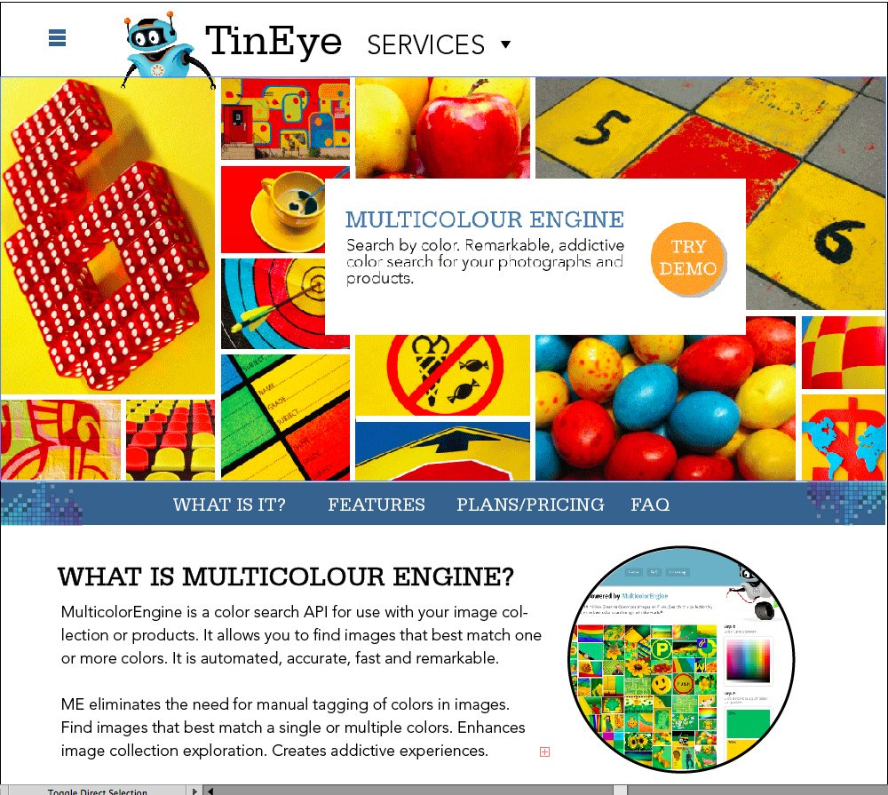
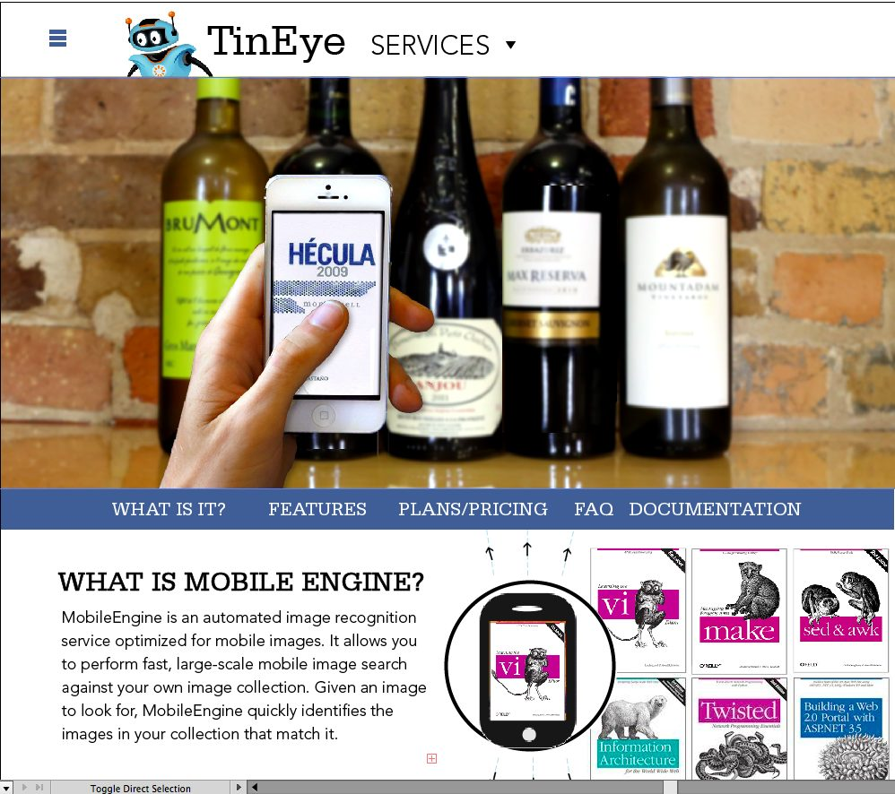
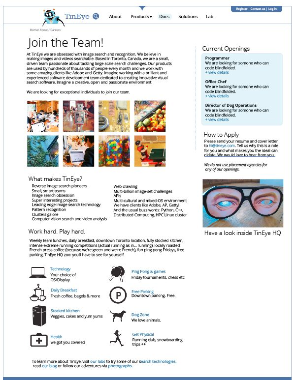
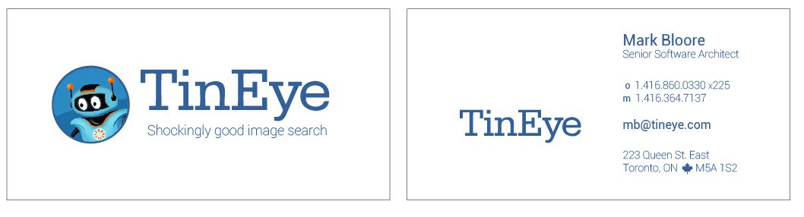
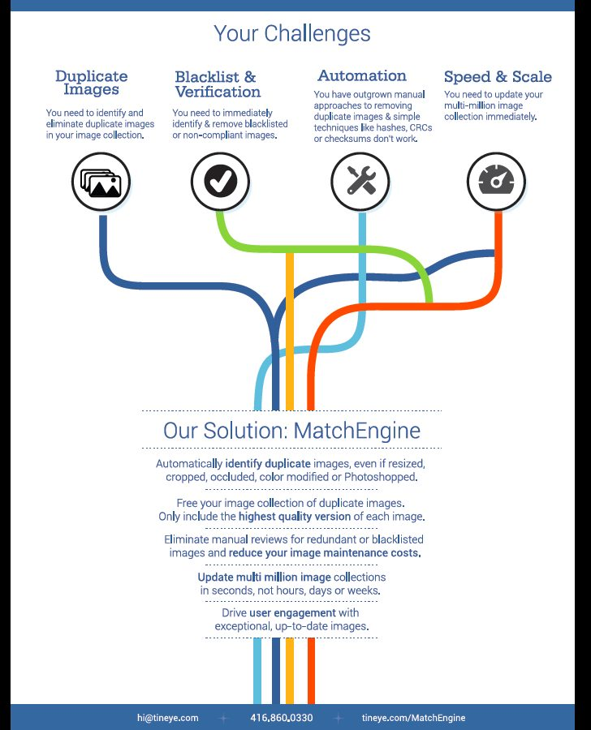
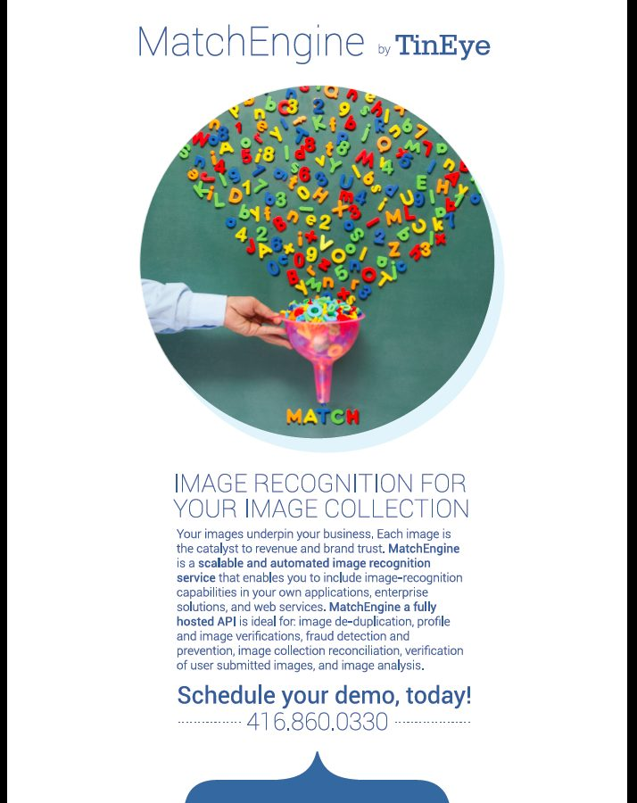

Overview
Quite possibly the world's best reverse image search and recognition platform. And most probably one of the best places to work. Smart people, ping pong and all you can eat tomatoes! http://www.tineye.com









